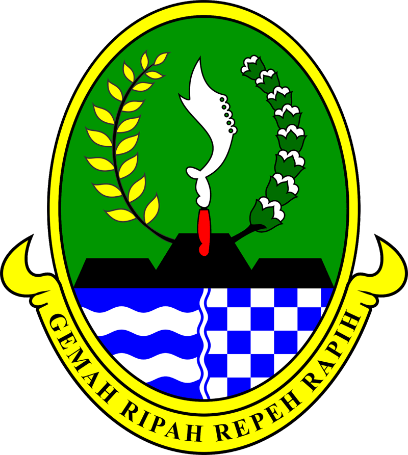

PEMERINTAH DAERAH PROVINSI JAWA BARAT
DINAS PENDIDIKAN
CABANG DINAS PENDIDIKAN WILAYAH IV
SMA NEGERI 1 RAWAMERTA
Jl. Garunggung - Panyingkiran Kec. Rawamerta Kab. Karawang, 41382
Email : sman1rwt@gmail.com Website : https://sman1rawamerta.sch.id
SURAT KETERANGAN KELAKUAN BAIK
Nomor : 421.3/0140/SMAN1RWT/CDP.WIL.IV/2022
Yang bertanda tangan di bawah ini, Kepala Sekolah Menengah Atas (SMA) Negeri 1 Rawamerta Kab. Karawang, menerangkan bahwa :
Nama
: AISAH
NIS / NISN
: 192010002 / 0042934582
Tempat, tanggal lahir
: Karawang, 12 Desember 2004
Jenis Kelamin
: Perempuan
Agama
: Islam
No. Peserta Ujian
: 19-2122-12A-001
Kelas
: XII IPA 1
telah melaksanakan Ujian Sekolah (US) Tahun Pelajaran 2021/2022 dan berdasarkan penilaian selama menjadi siswa di SMA Negeri 1 Rawamerta Kab. Karawang, yang bersangkutan
"Berkelakuan baik dan tidak pernah terlibat kenakalan remaja/Narkoba."
Demikian Surat Keterangan ini, kami buat agar dapat dipergunakan sebagaimana mestinya.

Rawamerta, 05 Mei 2022
Kepala Sekolah,


EPUL SAEPUL, S.Pd.I., M.Pd.
NIP. 19820213 201001 1 003